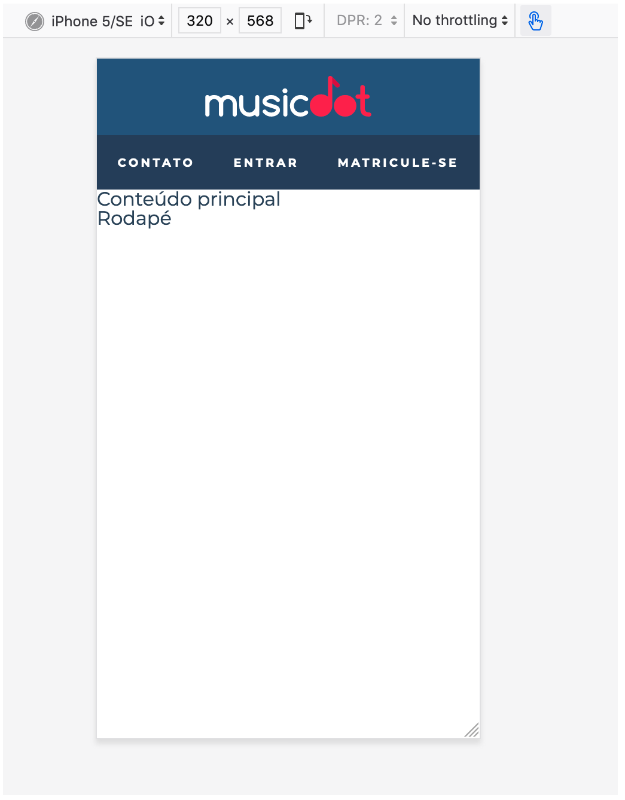

Durante todo o curso aplicaremos um conceito chamado de Progressive Enhancement. O P.E. vai permear todos os nossos códigos.
Nesse primeiro momento, o que é importante para nós:
Escolher uma marcação semântica que ajude quem está desenvolvendo o site a se guiar pelo código, geralmente já ajuda na acessibilidade de leitores de tela.
Testar semântica em leitores de tela (NVDA) ou em ferramentas de acessibilidade (Dev tools do Firefox).
Desenvolver com device-mode aberto no mobile. Telas menores primeiro: mobile-first
Ainda no device-mode deixar o modo de touch habilitado (escolher um celular como dispositivo)
Iniciaremos todo o estilo do cabeçalho com o Device Mode do navegador já configurado para uma tela de celular. O resultado esperado é o seguinte:

Para facilitar os cliques nos items do menu, para quem usa pointer com menor precisão (e.g. toucshscreen), aumentaremos a área clicável de cada link do menu, colocando um espaçamento interno de 1.86em 1.42em.
Diminuiremos o tamanho da fonte no cabecalho, porém, ainda deixaremos o texto legível para baixa visão:
deixar tudo com letras maiúsculas preservando a semântica do conteúdo
aumentar o espaçamento entre as letras
melhorar o contraste escurencendo a cor de fundo do menu com
um cinza-escuro-transparente: #272B3A87
verifique o suporte do padrão de cores #rrggbbaa em https://caniuse.com/#search=rrggbbaa e use uma alternativa caso ache necessário
Usar o layout padrão do CSS ao nosso favor, deixando tudo como está e alterando apenas o alinhamento do conteúdo do cabeçalho